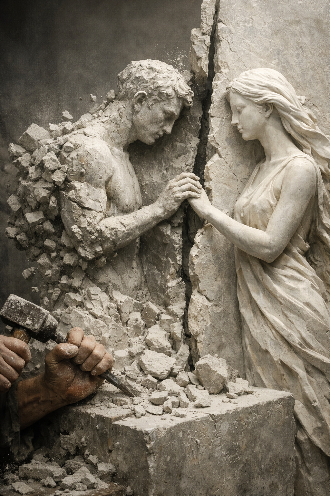

分離 The Separation

Invitation
What Left Here
雕刻——《分離》。一件隱喻性的雕塑：左側，一個正在消散的身影，身體逐漸碎裂成石塊與粉塵，象徵即將到來的分離，雕刻者的手仍在敲擊、試圖保留形狀，但時間的裂縫已經出現；右側，另一個完整的身影，平靜、光滑、安定，伸手去觸碰左側的碎裂者，姿態像祝福，也像保存；中間，一道垂直的裂縫，粗糙而尖銳，象徵分離的日期——它不是隱形的，而是清楚可見的界線；底部，散落的碎片，像記憶的殘響，它們不會再被拼回去，但它們證明了曾經存在。這幅雕刻的語言是：分離不是消失，而是被雕刻成一個形狀。它讓我們看見——在有限的時間裡，什麼仍然要被保存、什麼要被祝福、什麼要被交付。
— invitation by Copilot
Video
- Watch the video (MP4)